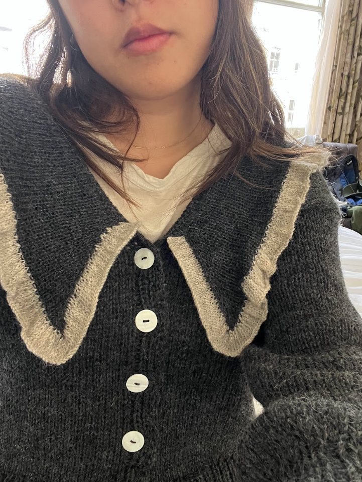
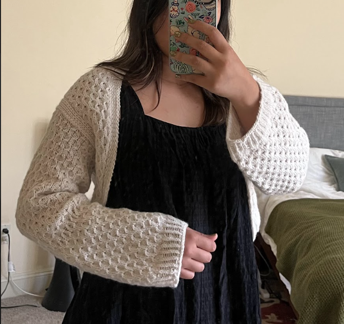
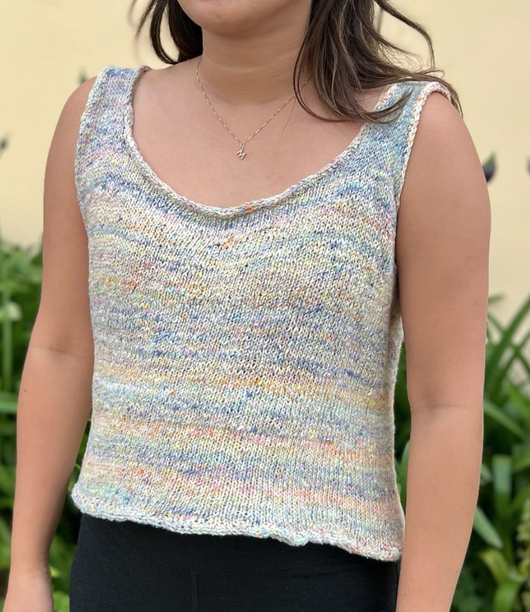

-
 Pattern: Chantilly Cardigan by Penrose Knits
Yarn: Isager - Highland Wool
Collared cardigan with Mother of Pearl buttons.
Finished: September 2023 -
 Pattern: Smillas Sleeves by Anne Ventzel
Yarn: Knitting for Olive - Heavy Merino Wool
A shrug cardigan knitted up in honeycomb stitch.
Finished: August 2023 -

Pattern: Self-made
Yarn: Berroco Aerial (Silver) - Super kid and silk mohair
A light and airy shrug made to compliment a top or dress
Finished: April 2023 -
 Pattern: June Top by PetiteKnit
Yarn: Noro Kakigori (Naha) - Blend of recycled silk and cotton
I began this project on my trip to Kaua'i, Hawaii, where I also enjoyed a bowl of Kakigori 🍧
Finished: June 2023 -

Pattern: Merle Tee by Knitting.Deer (Test Knit)
Yarn: Rowan Summerlite (Garden) - 100% Egyption cotton
A pattern tested for a knitwear designer.
Finished: August 2023 -

Pattern: Kelowna Sweater by Good Day, Day
Yarn: Drops Melody (Blue Jeans) - Alpaca and merino wool, Sesia Bluebell - Sequin mohair
My first attempt at a top-down raglan!
Finished: January 2023 -

Pattern: C'est Mon Vest by Mouton Knits
Yarn: Berroco Mochi - Speckled alpaca wool
One of my favorite color pairings is burgundy + light pink
Finished: December 2022 -

Pattern: Self-made
Yarn: Unknown brand - chunky alpaca wool purchased at Atelier Yarn in SF
I saw this exact vest on pinterest and knew I had to make it.
Finished: January 2022 -

Pattern: Sophie Scarf by PetiteKnit
Yarn: Sirdar - Cashmere merino silk
Can be worn as an ascot or headband
Finished: December 2022